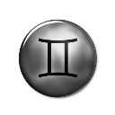

Aries, you have had transiting Uranus in Aries conjuncting your Sun sign since March 12, 2011 . Having fun yet? Uranus is known as the awakener. What have you awakened to? Uranus shocks, stimulates, brings sudden and unexpected events. What has it done in your life so far? Uranus can change our lives suddenly, unexpectedly, bring people back into our lives that were gone a long time or take people out of our lives that were very important to us. Without a doubt, Uranus can bring in new circumstances, new people, and old acquaintances; even alter our life style suddenly or ever so subtly.
But, remember to make out those lists. Find the time to stay as organized as you possibly can. Making lists helps to keep focused and to stay sane and not so irritable. Oh, yes, expect to continue to be outspoken, because there is no way back to who you used to be. Actually, you will be a much better personality, because you will be yourself and you will sour with the eagles, crying out – FREEDOM.
Carrer:
Aries, in the past few years you have been motivated to have a better life and to reach your goals. If you have been working on a new career or profession, the Aries horoscope 2017 for career predits that this year you may begin to see positive results. It may be a slow steady climb, but if you have been laying a solid foundation with a lot of hard work up the mountain of success, then you are likely to reach the success you desire, especially with transiting Saturn in the sign of Sagittarius.
The Aries love horoscope 2017 shows that you’ll be only too aware of the dynamics between yourself and others from the time the Sun enters your sign on March 20th, 2017. Your birthday season should have you looking at your new awareness of all you need in your intimate relationships and seeing how you can get these needs met. You are bringing a new maturity to the table and this will be reflected in how you communicate with current partners. As a result you may bring about a new phase of openness and willingness to achieve joint goals and also accommodate each other’s desires than you’ve previously enjoyed. Use the to work through togetherness concerns successfully..
Love:
Your relationship with yourself will also improve in 2017, because after all, it’s the one partnership we are all in from cradle to grave! Benefits may also come your way via partners and romance can be re-kindled. It often does take two in all kinds of ways. So double up for double benefits in areas that may surprise you in 2017, Aries!
Health:
The 2017 Aries horoscope for health warn you to be careful with your health. In 2017, there may be some hidden maladies that are brewing in your system that go undetected, but some of the major cause could be from lack of sleep, not sleeping sound or getting awakened by noises. Not getting enough sleep can break down the immune system and can create a lot of physical problems, so try to remedy the problem in what every way you can. But do get more sleep; it is necessary to stay healthy in 2017, Aries.
Since you are dreaming so much, try to remember your dreams, Aries. They will help show you what you are working on in your life and they can teach you. Ask for answers to your questions and the reasons for your problems in your dreams. Don’t be afraid of your dreams, Aries. Dreams are the royal road to the subconscious, said Freud. Your sleepless nights might be from fear of your dreams. Go to bed at night and put white light around you in your eye’s mind and ask for your Guardian Angels to protect you while you sleep and maybe you won’t wake up as often.
Aries, your spiritual life has also had a lot of growth. In 2017, your Faith is being tested and is growing more than you could have ever imagined.
Taurus 2017 Horoscope
OverView:
Taurus, you have had transiting Uranus in Taurus conjuncting your Sun sign since March 12, 2011 . Having fun yet? Uranus is known as the awakener. What have you awakened to? Uranus shocks, stimulates, brings sudden and unexpected events. What has it done in your life so far? Uranus can change our lives suddenly, unexpectedly, bring people back into our lives that were gone a long time or take people out of our lives that were very important to us. Without a doubt, Uranus can bring in new circumstances, new people, and old acquaintances; even alter our life style suddenly or ever so subtly.
But, remember to make out those lists. Find the time to stay as organized as you possibly can. Making lists helps to keep focused and to stay sane and not so irritable. Oh, yes, expect to continue to be outspoken, because there is no way back to who you used to be. Actually, you will be a much better personality, because you will be yourself and you will sour with the eagles, crying out – FREEDOM.
Carrer:
Taurus, in the past few years you have been motivated to have a better life and to reach your goals. If you have been working on a new career or profession, the Taurus horoscope 2017 for career predits that this year you may begin to see positive results. It may be a slow steady climb, but if you have been laying a solid foundation with a lot of hard work up the mountain of success, then you are likely to reach the success you desire, especially with transiting Saturn in the sign of Sagittarius.
The Taurus love horoscope 2017 shows that you’ll be only too aware of the dynamics between yourself and others from the time the Sun enters your sign on March 20th, 2017. Your birthday season should have you looking at your new awareness of all you need in your intimate relationships and seeing how you can get these needs met. You are bringing a new maturity to the table and this will be reflected in how you communicate with current partners. As a result you may bring about a new phase of openness and willingness to achieve joint goals and also accommodate each other’s desires than you’ve previously enjoyed. Use the to work through togetherness concerns successfully..
Love:
Your relationship with yourself will also improve in 2017, because after all, it’s the one partnership we are all in from cradle to grave! Benefits may also come your way via partners and romance can be re-kindled. It often does take two in all kinds of ways. So double up for double benefits in areas that may surprise you in 2017, Taurus!
Health:
The 2017 Taurus horoscope for health warn you to be careful with your health. In 2017, there may be some hidden maladies that are brewing in your system that go undetected, but some of the major cause could be from lack of sleep, not sleeping sound or getting awakened by noises. Not getting enough sleep can break down the immune system and can create a lot of physical problems, so try to remedy the problem in what every way you can. But do get more sleep; it is necessary to stay healthy in 2017, Taurus.
Since you are dreaming so much, try to remember your dreams, Taurus. They will help show you what you are working on in your life and they can teach you. Ask for answers to your questions and the reasons for your problems in your dreams. Don’t be afraid of your dreams, Taurus. Dreams are the royal road to the subconscious, said Freud. Your sleepless nights might be from fear of your dreams. Go to bed at night and put white light around you in your eye’s mind and ask for your Guardian Angels to protect you while you sleep and maybe you won’t wake up as often.
Your spiritual life has also had a lot of growth. In 2017, your Faith is being tested and is growing more than you could have ever imagined.
Gemini 2017 Horoscope
OverView:
Gemini, you have had transiting Uranus in Gemini conjuncting your Sun sign since March 12, 2011 . Having fun yet? Uranus is known as the awakener. What have you awakened to? Uranus shocks, stimulates, brings sudden and unexpected events. What has it done in your life so far? Uranus can change our lives suddenly, unexpectedly, bring people back into our lives that were gone a long time or take people out of our lives that were very important to us. Without a doubt, Uranus can bring in new circumstances, new people, and old acquaintances; even alter our life style suddenly or ever so subtly.
But, remember to make out those lists. Find the time to stay as organized as you possibly can. Making lists helps to keep focused and to stay sane and not so irritable. Oh, yes, expect to continue to be outspoken, because there is no way back to who you used to be. Actually, you will be a much better personality, because you will be yourself and you will sour with the eagles, crying out – FREEDOM.
Carrer:
Gemini, in the past few years you have been motivated to have a better life and to reach your goals. If you have been working on a new career or profession, the Gemini horoscope 2017 for career predits that this year you may begin to see positive results. It may be a slow steady climb, but if you have been laying a solid foundation with a lot of hard work up the mountain of success, then you are likely to reach the success you desire, especially with transiting Saturn in the sign of Sagittarius.
The Gemini love horoscope 2017 shows that you’ll be only too aware of the dynamics between yourself and others from the time the Sun enters your sign on March 20th, 2017. Your birthday season should have you looking at your new awareness of all you need in your intimate relationships and seeing how you can get these needs met. You are bringing a new maturity to the table and this will be reflected in how you communicate with current partners. As a result you may bring about a new phase of openness and willingness to achieve joint goals and also accommodate each other’s desires than you’ve previously enjoyed. Use the to work through togetherness concerns successfully..
Love:
Your relationship with yourself will also improve in 2017, because after all, it’s the one partnership we are all in from cradle to grave! Benefits may also come your way via partners and romance can be re-kindled. It often does take two in all kinds of ways. So double up for double benefits in areas that may surprise you in 2017, Gemini!
Health:
The 2017 Gemini horoscope for health warn you to be careful with your health. In 2017, there may be some hidden maladies that are brewing in your system that go undetected, but some of the major cause could be from lack of sleep, not sleeping sound or getting awakened by noises. Not getting enough sleep can break down the immune system and can create a lot of physical problems, so try to remedy the problem in what every way you can. But do get more sleep; it is necessary to stay healthy in 2017, Gemini.
Since you are dreaming so much, try to remember your dreams, Gemini. They will help show you what you are working on in your life and they can teach you. Ask for answers to your questions and the reasons for your problems in your dreams. Don’t be afraid of your dreams, Gemini. Dreams are the royal road to the subconscious, said Freud. Your sleepless nights might be from fear of your dreams. Go to bed at night and put white light around you in your eye’s mind and ask for your Guardian Angels to protect you while you sleep and maybe you won’t wake up as often.
Your spiritual life has also had a lot of growth. In 2017, your Faith is being tested and is growing more than you could have ever imagined.
Cancer 2017 Horoscope
OverView:
Cancer, you have had transiting Uranus in Cancer conjuncting your Sun sign since March 12, 2011 . Having fun yet? Uranus is known as the awakener. What have you awakened to? Uranus shocks, stimulates, brings sudden and unexpected events. What has it done in your life so far? Uranus can change our lives suddenly, unexpectedly, bring people back into our lives that were gone a long time or take people out of our lives that were very important to us. Without a doubt, Uranus can bring in new circumstances, new people, and old acquaintances; even alter our life style suddenly or ever so subtly.
But, remember to make out those lists. Find the time to stay as organized as you possibly can. Making lists helps to keep focused and to stay sane and not so irritable. Oh, yes, expect to continue to be outspoken, because there is no way back to who you used to be. Actually, you will be a much better personality, because you will be yourself and you will sour with the eagles, crying out – FREEDOM.
Carrer:
Cancer, in the past few years you have been motivated to have a better life and to reach your goals. If you have been working on a new career or profession, the Cancer horoscope 2017 for career predits that this year you may begin to see positive results. It may be a slow steady climb, but if you have been laying a solid foundation with a lot of hard work up the mountain of success, then you are likely to reach the success you desire, especially with transiting Saturn in the sign of Sagittarius.
The Cancer love horoscope 2017 shows that you’ll be only too aware of the dynamics between yourself and others from the time the Sun enters your sign on March 20th, 2017. Your birthday season should have you looking at your new awareness of all you need in your intimate relationships and seeing how you can get these needs met. You are bringing a new maturity to the table and this will be reflected in how you communicate with current partners. As a result you may bring about a new phase of openness and willingness to achieve joint goals and also accommodate each other’s desires than you’ve previously enjoyed. Use the to work through togetherness concerns successfully..
Love:
Your relationship with yourself will also improve in 2017, because after all, it’s the one partnership we are all in from cradle to grave! Benefits may also come your way via partners and romance can be re-kindled. It often does take two in all kinds of ways. So double up for double benefits in areas that may surprise you in 2017, Cancer!
Health:
The 2017 Cancer horoscope for health warn you to be careful with your health. In 2017, there may be some hidden maladies that are brewing in your system that go undetected, but some of the major cause could be from lack of sleep, not sleeping sound or getting awakened by noises. Not getting enough sleep can break down the immune system and can create a lot of physical problems, so try to remedy the problem in what every way you can. But do get more sleep; it is necessary to stay healthy in 2017, Cancer.
Since you are dreaming so much, try to remember your dreams, Cancer. They will help show you what you are working on in your life and they can teach you. Ask for answers to your questions and the reasons for your problems in your dreams. Don’t be afraid of your dreams, Cancer. Dreams are the royal road to the subconscious, said Freud. Your sleepless nights might be from fear of your dreams. Go to bed at night and put white light around you in your eye’s mind and ask for your Guardian Angels to protect you while you sleep and maybe you won’t wake up as often.
Your spiritual life has also had a lot of growth. In 2017, your Faith is being tested and is growing more than you could have ever imagined.
Leo 2017 Horoscope
OverView:
Leo, you have had transiting Uranus in Leo conjuncting your Sun sign since March 12, 2011 . Having fun yet? Uranus is known as the awakener. What have you awakened to? Uranus shocks, stimulates, brings sudden and unexpected events. What has it done in your life so far? Uranus can change our lives suddenly, unexpectedly, bring people back into our lives that were gone a long time or take people out of our lives that were very important to us. Without a doubt, Uranus can bring in new circumstances, new people, and old acquaintances; even alter our life style suddenly or ever so subtly.
But, remember to make out those lists. Find the time to stay as organized as you possibly can. Making lists helps to keep focused and to stay sane and not so irritable. Oh, yes, expect to continue to be outspoken, because there is no way back to who you used to be. Actually, you will be a much better personality, because you will be yourself and you will sour with the eagles, crying out – FREEDOM.
Carrer:
Leo, in the past few years you have been motivated to have a better life and to reach your goals. If you have been working on a new career or profession, the Leo horoscope 2017 for career predits that this year you may begin to see positive results. It may be a slow steady climb, but if you have been laying a solid foundation with a lot of hard work up the mountain of success, then you are likely to reach the success you desire, especially with transiting Saturn in the sign of Sagittarius.
The Leo love horoscope 2017 shows that you’ll be only too aware of the dynamics between yourself and others from the time the Sun enters your sign on March 20th, 2017. Your birthday season should have you looking at your new awareness of all you need in your intimate relationships and seeing how you can get these needs met. You are bringing a new maturity to the table and this will be reflected in how you communicate with current partners. As a result you may bring about a new phase of openness and willingness to achieve joint goals and also accommodate each other’s desires than you’ve previously enjoyed. Use the to work through togetherness concerns successfully..
Love:
Your relationship with yourself will also improve in 2017, because after all, it’s the one partnership we are all in from cradle to grave! Benefits may also come your way via partners and romance can be re-kindled. It often does take two in all kinds of ways. So double up for double benefits in areas that may surprise you in 2017, Leo!
Health:
The 2017 Leo horoscope for health warn you to be careful with your health. In 2017, there may be some hidden maladies that are brewing in your system that go undetected, but some of the major cause could be from lack of sleep, not sleeping sound or getting awakened by noises. Not getting enough sleep can break down the immune system and can create a lot of physical problems, so try to remedy the problem in what every way you can. But do get more sleep; it is necessary to stay healthy in 2017, Leo.
Since you are dreaming so much, try to remember your dreams, Leo. They will help show you what you are working on in your life and they can teach you. Ask for answers to your questions and the reasons for your problems in your dreams. Don’t be afraid of your dreams, Leo. Dreams are the royal road to the subconscious, said Freud. Your sleepless nights might be from fear of your dreams. Go to bed at night and put white light around you in your eye’s mind and ask for your Guardian Angels to protect you while you sleep and maybe you won’t wake up as often.
Your spiritual life has also had a lot of growth. In 2017, your Faith is being tested and is growing more than you could have ever imagined.
Virgo 2017 Horoscope
OverView:
Virgo, you have had transiting Uranus in Virgo conjuncting your Sun sign since March 12, 2011 . Having fun yet? Uranus is known as the awakener. What have you awakened to? Uranus shocks, stimulates, brings sudden and unexpected events. What has it done in your life so far? Uranus can change our lives suddenly, unexpectedly, bring people back into our lives that were gone a long time or take people out of our lives that were very important to us. Without a doubt, Uranus can bring in new circumstances, new people, and old acquaintances; even alter our life style suddenly or ever so subtly.
But, remember to make out those lists. Find the time to stay as organized as you possibly can. Making lists helps to keep focused and to stay sane and not so irritable. Oh, yes, expect to continue to be outspoken, because there is no way back to who you used to be. Actually, you will be a much better personality, because you will be yourself and you will sour with the eagles, crying out – FREEDOM.
Carrer:
Virgo, in the past few years you have been motivated to have a better life and to reach your goals. If you have been working on a new career or profession, the Virgo horoscope 2017 for career predits that this year you may begin to see positive results. It may be a slow steady climb, but if you have been laying a solid foundation with a lot of hard work up the mountain of success, then you are likely to reach the success you desire, especially with transiting Saturn in the sign of Sagittarius.
The Virgo love horoscope 2017 shows that you’ll be only too aware of the dynamics between yourself and others from the time the Sun enters your sign on March 20th, 2017. Your birthday season should have you looking at your new awareness of all you need in your intimate relationships and seeing how you can get these needs met. You are bringing a new maturity to the table and this will be reflected in how you communicate with current partners. As a result you may bring about a new phase of openness and willingness to achieve joint goals and also accommodate each other’s desires than you’ve previously enjoyed. Use the to work through togetherness concerns successfully..
Love:
Your relationship with yourself will also improve in 2017, because after all, it’s the one partnership we are all in from cradle to grave! Benefits may also come your way via partners and romance can be re-kindled. It often does take two in all kinds of ways. So double up for double benefits in areas that may surprise you in 2017, Virgo!
Health:
The 2017 Virgo horoscope for health warn you to be careful with your health. In 2017, there may be some hidden maladies that are brewing in your system that go undetected, but some of the major cause could be from lack of sleep, not sleeping sound or getting awakened by noises. Not getting enough sleep can break down the immune system and can create a lot of physical problems, so try to remedy the problem in what every way you can. But do get more sleep; it is necessary to stay healthy in 2017, Virgo.
Since you are dreaming so much, try to remember your dreams, Virgo. They will help show you what you are working on in your life and they can teach you. Ask for answers to your questions and the reasons for your problems in your dreams. Don’t be afraid of your dreams, Virgo. Dreams are the royal road to the subconscious, said Freud. Your sleepless nights might be from fear of your dreams. Go to bed at night and put white light around you in your eye’s mind and ask for your Guardian Angels to protect you while you sleep and maybe you won’t wake up as often.
Your spiritual life has also had a lot of growth. In 2017, your Faith is being tested and is growing more than you could have ever imagined.
Libra 2017 Horoscope
OverView:
Libra, you have had transiting Uranus in Libra conjuncting your Sun sign since March 12, 2011 . Having fun yet? Uranus is known as the awakener. What have you awakened to? Uranus shocks, stimulates, brings sudden and unexpected events. What has it done in your life so far? Uranus can change our lives suddenly, unexpectedly, bring people back into our lives that were gone a long time or take people out of our lives that were very important to us. Without a doubt, Uranus can bring in new circumstances, new people, and old acquaintances; even alter our life style suddenly or ever so subtly.
But, remember to make out those lists. Find the time to stay as organized as you possibly can. Making lists helps to keep focused and to stay sane and not so irritable. Oh, yes, expect to continue to be outspoken, because there is no way back to who you used to be. Actually, you will be a much better personality, because you will be yourself and you will sour with the eagles, crying out – FREEDOM.
Carrer:
Libra, in the past few years you have been motivated to have a better life and to reach your goals. If you have been working on a new career or profession, the Libra horoscope 2017 for career predits that this year you may begin to see positive results. It may be a slow steady climb, but if you have been laying a solid foundation with a lot of hard work up the mountain of success, then you are likely to reach the success you desire, especially with transiting Saturn in the sign of Sagittarius.
The Libra love horoscope 2017 shows that you’ll be only too aware of the dynamics between yourself and others from the time the Sun enters your sign on March 20th, 2017. Your birthday season should have you looking at your new awareness of all you need in your intimate relationships and seeing how you can get these needs met. You are bringing a new maturity to the table and this will be reflected in how you communicate with current partners. As a result you may bring about a new phase of openness and willingness to achieve joint goals and also accommodate each other’s desires than you’ve previously enjoyed. Use the to work through togetherness concerns successfully..
Love:
Your relationship with yourself will also improve in 2017, because after all, it’s the one partnership we are all in from cradle to grave! Benefits may also come your way via partners and romance can be re-kindled. It often does take two in all kinds of ways. So double up for double benefits in areas that may surprise you in 2017, Libra!
Health:
The 2017 Libra horoscope for health warn you to be careful with your health. In 2017, there may be some hidden maladies that are brewing in your system that go undetected, but some of the major cause could be from lack of sleep, not sleeping sound or getting awakened by noises. Not getting enough sleep can break down the immune system and can create a lot of physical problems, so try to remedy the problem in what every way you can. But do get more sleep; it is necessary to stay healthy in 2017, Libra.
Since you are dreaming so much, try to remember your dreams, Libra. They will help show you what you are working on in your life and they can teach you. Ask for answers to your questions and the reasons for your problems in your dreams. Don’t be afraid of your dreams, Libra. Dreams are the royal road to the subconscious, said Freud. Your sleepless nights might be from fear of your dreams. Go to bed at night and put white light around you in your eye’s mind and ask for your Guardian Angels to protect you while you sleep and maybe you won’t wake up as often.
Your spiritual life has also had a lot of growth. In 2017, your Faith is being tested and is growing more than you could have ever imagined.
Scorpio 2017 Horoscope
OverView:
Scorpio, you have had transiting Uranus in Scorpio conjuncting your Sun sign since March 12, 2011 . Having fun yet? Uranus is known as the awakener. What have you awakened to? Uranus shocks, stimulates, brings sudden and unexpected events. What has it done in your life so far? Uranus can change our lives suddenly, unexpectedly, bring people back into our lives that were gone a long time or take people out of our lives that were very important to us. Without a doubt, Uranus can bring in new circumstances, new people, and old acquaintances; even alter our life style suddenly or ever so subtly.
But, remember to make out those lists. Find the time to stay as organized as you possibly can. Making lists helps to keep focused and to stay sane and not so irritable. Oh, yes, expect to continue to be outspoken, because there is no way back to who you used to be. Actually, you will be a much better personality, because you will be yourself and you will sour with the eagles, crying out – FREEDOM.
Carrer:
Scorpio, in the past few years you have been motivated to have a better life and to reach your goals. If you have been working on a new career or profession, the Scorpio horoscope 2017 for career predits that this year you may begin to see positive results. It may be a slow steady climb, but if you have been laying a solid foundation with a lot of hard work up the mountain of success, then you are likely to reach the success you desire, especially with transiting Saturn in the sign of Sagittarius.
The Scorpio love horoscope 2017 shows that you’ll be only too aware of the dynamics between yourself and others from the time the Sun enters your sign on March 20th, 2017. Your birthday season should have you looking at your new awareness of all you need in your intimate relationships and seeing how you can get these needs met. You are bringing a new maturity to the table and this will be reflected in how you communicate with current partners. As a result you may bring about a new phase of openness and willingness to achieve joint goals and also accommodate each other’s desires than you’ve previously enjoyed. Use the to work through togetherness concerns successfully..
Love:
Your relationship with yourself will also improve in 2017, because after all, it’s the one partnership we are all in from cradle to grave! Benefits may also come your way via partners and romance can be re-kindled. It often does take two in all kinds of ways. So double up for double benefits in areas that may surprise you in 2017, Scorpio!
Health:
The 2017 Scorpio horoscope for health warn you to be careful with your health. In 2017, there may be some hidden maladies that are brewing in your system that go undetected, but some of the major cause could be from lack of sleep, not sleeping sound or getting awakened by noises. Not getting enough sleep can break down the immune system and can create a lot of physical problems, so try to remedy the problem in what every way you can. But do get more sleep; it is necessary to stay healthy in 2017, Scorpio.
Since you are dreaming so much, try to remember your dreams, Scorpio. They will help show you what you are working on in your life and they can teach you. Ask for answers to your questions and the reasons for your problems in your dreams. Don’t be afraid of your dreams, Scorpio. Dreams are the royal road to the subconscious, said Freud. Your sleepless nights might be from fear of your dreams. Go to bed at night and put white light around you in your eye’s mind and ask for your Guardian Angels to protect you while you sleep and maybe you won’t wake up as often.
Your spiritual life has also had a lot of growth. In 2017, your Faith is being tested and is growing more than you could have ever imagined.
Sagittarius 2017 Horoscope
OverView:
Sagittarius, you have had transiting Uranus in Sagittarius conjuncting your Sun sign since March 12, 2011 . Having fun yet? Uranus is known as the awakener. What have you awakened to? Uranus shocks, stimulates, brings sudden and unexpected events. What has it done in your life so far? Uranus can change our lives suddenly, unexpectedly, bring people back into our lives that were gone a long time or take people out of our lives that were very important to us. Without a doubt, Uranus can bring in new circumstances, new people, and old acquaintances; even alter our life style suddenly or ever so subtly.
But, remember to make out those lists. Find the time to stay as organized as you possibly can. Making lists helps to keep focused and to stay sane and not so irritable. Oh, yes, expect to continue to be outspoken, because there is no way back to who you used to be. Actually, you will be a much better personality, because you will be yourself and you will sour with the eagles, crying out – FREEDOM.
Carrer:
Sagittarius, in the past few years you have been motivated to have a better life and to reach your goals. If you have been working on a new career or profession, the Sagittarius horoscope 2017 for career predits that this year you may begin to see positive results. It may be a slow steady climb, but if you have been laying a solid foundation with a lot of hard work up the mountain of success, then you are likely to reach the success you desire, especially with transiting Saturn in the sign of Sagittarius.
The Sagittarius love horoscope 2017 shows that you’ll be only too aware of the dynamics between yourself and others from the time the Sun enters your sign on March 20th, 2017. Your birthday season should have you looking at your new awareness of all you need in your intimate relationships and seeing how you can get these needs met. You are bringing a new maturity to the table and this will be reflected in how you communicate with current partners. As a result you may bring about a new phase of openness and willingness to achieve joint goals and also accommodate each other’s desires than you’ve previously enjoyed. Use the to work through togetherness concerns successfully..
Love:
Your relationship with yourself will also improve in 2017, because after all, it’s the one partnership we are all in from cradle to grave! Benefits may also come your way via partners and romance can be re-kindled. It often does take two in all kinds of ways. So double up for double benefits in areas that may surprise you in 2017, Sagittarius!
Health:
The 2017 Sagittarius horoscope for health warn you to be careful with your health. In 2017, there may be some hidden maladies that are brewing in your system that go undetected, but some of the major cause could be from lack of sleep, not sleeping sound or getting awakened by noises. Not getting enough sleep can break down the immune system and can create a lot of physical problems, so try to remedy the problem in what every way you can. But do get more sleep; it is necessary to stay healthy in 2017, Sagittarius.
Since you are dreaming so much, try to remember your dreams, Sagittarius. They will help show you what you are working on in your life and they can teach you. Ask for answers to your questions and the reasons for your problems in your dreams. Don’t be afraid of your dreams, Sagittarius. Dreams are the royal road to the subconscious, said Freud. Your sleepless nights might be from fear of your dreams. Go to bed at night and put white light around you in your eye’s mind and ask for your Guardian Angels to protect you while you sleep and maybe you won’t wake up as often.
Your spiritual life has also had a lot of growth. In 2017, your Faith is being tested and is growing more than you could have ever imagined.
Capricorn 2017 Horoscope
OverView:
Capricorn, you have had transiting Uranus in Capricorn conjuncting your Sun sign since March 12, 2011 . Having fun yet? Uranus is known as the awakener. What have you awakened to? Uranus shocks, stimulates, brings sudden and unexpected events. What has it done in your life so far? Uranus can change our lives suddenly, unexpectedly, bring people back into our lives that were gone a long time or take people out of our lives that were very important to us. Without a doubt, Uranus can bring in new circumstances, new people, and old acquaintances; even alter our life style suddenly or ever so subtly.
But, remember to make out those lists. Find the time to stay as organized as you possibly can. Making lists helps to keep focused and to stay sane and not so irritable. Oh, yes, expect to continue to be outspoken, because there is no way back to who you used to be. Actually, you will be a much better personality, because you will be yourself and you will sour with the eagles, crying out – FREEDOM.
Carrer:
Capricorn, in the past few years you have been motivated to have a better life and to reach your goals. If you have been working on a new career or profession, the Capricorn horoscope 2017 for career predits that this year you may begin to see positive results. It may be a slow steady climb, but if you have been laying a solid foundation with a lot of hard work up the mountain of success, then you are likely to reach the success you desire, especially with transiting Saturn in the sign of Capricorn.
The Capricorn love horoscope 2017 shows that you’ll be only too aware of the dynamics between yourself and others from the time the Sun enters your sign on March 20th, 2017. Your birthday season should have you looking at your new awareness of all you need in your intimate relationships and seeing how you can get these needs met. You are bringing a new maturity to the table and this will be reflected in how you communicate with current partners. As a result you may bring about a new phase of openness and willingness to achieve joint goals and also accommodate each other’s desires than you’ve previously enjoyed. Use the to work through togetherness concerns successfully..
Love:
Your relationship with yourself will also improve in 2017, because after all, it’s the one partnership we are all in from cradle to grave! Benefits may also come your way via partners and romance can be re-kindled. It often does take two in all kinds of ways. So double up for double benefits in areas that may surprise you in 2017, Capricorn!
Health:
The 2017 Capricorn horoscope for health warn you to be careful with your health. In 2017, there may be some hidden maladies that are brewing in your system that go undetected, but some of the major cause could be from lack of sleep, not sleeping sound or getting awakened by noises. Not getting enough sleep can break down the immune system and can create a lot of physical problems, so try to remedy the problem in what every way you can. But do get more sleep; it is necessary to stay healthy in 2017, Capricorn.
Since you are dreaming so much, try to remember your dreams, Capricorn. They will help show you what you are working on in your life and they can teach you. Ask for answers to your questions and the reasons for your problems in your dreams. Don’t be afraid of your dreams, Capricorn. Dreams are the royal road to the subconscious, said Freud. Your sleepless nights might be from fear of your dreams. Go to bed at night and put white light around you in your eye’s mind and ask for your Guardian Angels to protect you while you sleep and maybe you won’t wake up as often.
Your spiritual life has also had a lot of growth. In 2017, your Faith is being tested and is growing more than you could have ever imagined.
Aquarius 2017 Horoscope
OverView:
Aquarius, you have had transiting Uranus in Aquarius conjuncting your Sun sign since March 12, 2011 . Having fun yet? Uranus is known as the awakener. What have you awakened to? Uranus shocks, stimulates, brings sudden and unexpected events. What has it done in your life so far? Uranus can change our lives suddenly, unexpectedly, bring people back into our lives that were gone a long time or take people out of our lives that were very important to us. Without a doubt, Uranus can bring in new circumstances, new people, and old acquaintances; even alter our life style suddenly or ever so subtly.
But, remember to make out those lists. Find the time to stay as organized as you possibly can. Making lists helps to keep focused and to stay sane and not so irritable. Oh, yes, expect to continue to be outspoken, because there is no way back to who you used to be. Actually, you will be a much better personality, because you will be yourself and you will sour with the eagles, crying out – FREEDOM.
Carrer:
Aquarius, in the past few years you have been motivated to have a better life and to reach your goals. If you have been working on a new career or profession, the Aquarius horoscope 2017 for career predits that this year you may begin to see positive results. It may be a slow steady climb, but if you have been laying a solid foundation with a lot of hard work up the mountain of success, then you are likely to reach the success you desire, especially with transiting Saturn in the sign of Aquarius.
The Aquarius love horoscope 2017 shows that you’ll be only too aware of the dynamics between yourself and others from the time the Sun enters your sign on March 20th, 2017. Your birthday season should have you looking at your new awareness of all you need in your intimate relationships and seeing how you can get these needs met. You are bringing a new maturity to the table and this will be reflected in how you communicate with current partners. As a result you may bring about a new phase of openness and willingness to achieve joint goals and also accommodate each other’s desires than you’ve previously enjoyed. Use the to work through togetherness concerns successfully..
Love:
Your relationship with yourself will also improve in 2017, because after all, it’s the one partnership we are all in from cradle to grave! Benefits may also come your way via partners and romance can be re-kindled. It often does take two in all kinds of ways. So double up for double benefits in areas that may surprise you in 2017, Aquarius!
Health:
The 2017 Aquarius horoscope for health warn you to be careful with your health. In 2017, there may be some hidden maladies that are brewing in your system that go undetected, but some of the major cause could be from lack of sleep, not sleeping sound or getting awakened by noises. Not getting enough sleep can break down the immune system and can create a lot of physical problems, so try to remedy the problem in what every way you can. But do get more sleep; it is necessary to stay healthy in 2017, Aquarius.
Since you are dreaming so much, try to remember your dreams, Aquarius. They will help show you what you are working on in your life and they can teach you. Ask for answers to your questions and the reasons for your problems in your dreams. Don’t be afraid of your dreams, Aquarius. Dreams are the royal road to the subconscious, said Freud. Your sleepless nights might be from fear of your dreams. Go to bed at night and put white light around you in your eye’s mind and ask for your Guardian Angels to protect you while you sleep and maybe you won’t wake up as often.
Your spiritual life has also had a lot of growth. In 2017, your Faith is being tested and is growing more than you could have ever imagined.
Pisces 2017 Horoscope
OverView:
Pisces, you have had transiting Uranus in Pisces conjuncting your Sun sign since March 12, 2011 . Having fun yet? Uranus is known as the awakener. What have you awakened to? Uranus shocks, stimulates, brings sudden and unexpected events. What has it done in your life so far? Uranus can change our lives suddenly, unexpectedly, bring people back into our lives that were gone a long time or take people out of our lives that were very important to us. Without a doubt, Uranus can bring in new circumstances, new people, and old acquaintances; even alter our life style suddenly or ever so subtly.
But, remember to make out those lists. Find the time to stay as organized as you possibly can. Making lists helps to keep focused and to stay sane and not so irritable. Oh, yes, expect to continue to be outspoken, because there is no way back to who you used to be. Actually, you will be a much better personality, because you will be yourself and you will sour with the eagles, crying out – FREEDOM.
Carrer:
Pisces, in the past few years you have been motivated to have a better life and to reach your goals. If you have been working on a new career or profession, the Pisces horoscope 2017 for career predits that this year you may begin to see positive results. It may be a slow steady climb, but if you have been laying a solid foundation with a lot of hard work up the mountain of success, then you are likely to reach the success you desire, especially with transiting Saturn in the sign of Pisces.
The Pisces love horoscope 2017 shows that you’ll be only too aware of the dynamics between yourself and others from the time the Sun enters your sign on March 20th, 2017. Your birthday season should have you looking at your new awareness of all you need in your intimate relationships and seeing how you can get these needs met. You are bringing a new maturity to the table and this will be reflected in how you communicate with current partners. As a result you may bring about a new phase of openness and willingness to achieve joint goals and also accommodate each other’s desires than you’ve previously enjoyed. Use the to work through togetherness concerns successfully..
Love:
Your relationship with yourself will also improve in 2017, because after all, it’s the one partnership we are all in from cradle to grave! Benefits may also come your way via partners and romance can be re-kindled. It often does take two in all kinds of ways. So double up for double benefits in areas that may surprise you in 2017, Pisces!
Health:
The 2017 Pisces horoscope for health warn you to be careful with your health. In 2017, there may be some hidden maladies that are brewing in your system that go undetected, but some of the major cause could be from lack of sleep, not sleeping sound or getting awakened by noises. Not getting enough sleep can break down the immune system and can create a lot of physical problems, so try to remedy the problem in what every way you can. But do get more sleep; it is necessary to stay healthy in 2017, Pisces.
Since you are dreaming so much, try to remember your dreams, Pisces. They will help show you what you are working on in your life and they can teach you. Ask for answers to your questions and the reasons for your problems in your dreams. Don’t be afraid of your dreams, Pisces. Dreams are the royal road to the subconscious, said Freud. Your sleepless nights might be from fear of your dreams. Go to bed at night and put white light around you in your eye’s mind and ask for your Guardian Angels to protect you while you sleep and maybe you won’t wake up as often.
Your spiritual life has also had a lot of growth. In 2017, your Faith is being tested and is growing more than you could have ever imagined.


 Cancer 2017 Horoscope
Cancer 2017 Horoscope Leo 2017 Horoscope
Leo 2017 Horoscope Scorpio 2017 Horoscope
Scorpio 2017 Horoscope Sagittarius 2017 Horoscope
Sagittarius 2017 Horoscope Aquarius 2017 Horoscope
Aquarius 2017 Horoscope